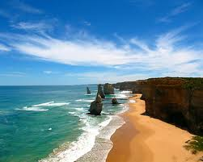
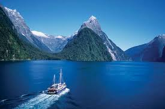

Featured Locations
Bora Bora

The Island of Bora Bora is one of the French Polynesia Leeward group of Islands and is based around an extinct volcano and two peaks. The peaks are named Mount Pahia and Mount Otemanu, respectivly. Bora Bora is one of the most secluded islands on the planet. To demonstrate this, sample this; the Island of Hawaii gets more visitors in 10 days than the whole of French Polynesia gets in a whole year! If you put a flower on your left year, it is an indication that you have someone special in your life. If on the other hand you put it on your right ear, it means you are looking and Bora Bora natives will spoil you with flirts. Doesn't sound half bad huh! I give this location a ten out of ten and is a MUST visit!
Telluride, Colorado

Telluride is tucked into a box canyon surrounded by 13,000- and 14,000-foot peaks, and is just eight blocks wide and twelve blocks long. Because of its significant role in the history of the American West, Telluride was designated a National Historic Landmark District in 1964. This small ski town in Colorado is a great, summer spot too! Yeah I said it.... SUMMER! With great hiking trails, fishing, shops, water-activities, and scenic views you can not go wrong with this summer destination. The flowers are blooming and the hippies are smoking.
Today's Hot Deal!
Visit the Taj Mahal and go on a safari in this limited package!

Visit the historic Taj Mahal located in Agra, India
Come, Walk along the pathway beside the reflecting pool with fountains upto the mausoleum crafted in soft & pure marble and jewelled with semi precious stones, where in the serenity of paradise rests the Queen in peace with her King. Come to unfold the pages from the past to churn the charm out of its mystique and enrich your imagination about this marvel of an epic in stone, The Taj! What a place to be alive, you will literally soak in the history around you. Wow what a place to got to. So cool. So goooooooooooo! For as little as $1269 you can get a round trip and a tour at the taj mahal, but wait there is more. Read on for the safari bundle for more deals and a combo package! Go. go. GOOO! The construction of the Taj Mahal was begun in 1632, a year after the death of Empress Mumtaz. The construction was completed in the year 1653, which means that it took approximately 22 years to complete this astounding piece of architecture. At that time, the estimated construction cost was a whopping sum of Rs. 32 million, which, when considered in terms of today’s value of money, would be something way above $1 billion. The Taj Mahal being the dedication and homage of Mumtaz Mahal, it has calligraphy all over the interior and exterior, which, among other patterns and holy inscriptions, also has calligraphy on the tomb that identifies and praises Mumtaz Mahal. Another interesting fact is that there are 99 names of Allah found on the sides of the actual tomb as calligraphic inscriptions. After all, Shah Jahan did envision Mumtaz’s home in the paradise, and Taj Mahal was that imagination coming to life. Hop on this deal now and SAVE SAVE SAVE!!!
Safari in Tanzania and find your inner lion king
We have friends from the mother land that will arrange lodge and camping safaris, trekking and hiking tours and beach holidays. We carefully select our well trained guides, drivers, cooks and porters and have a fleet of well-maintained 4×4 vehicles as well as supply gear and equipment for camping safaris and climbing adventures. It would be an unreal expierence and guess what! This trip is as low as $7800 a person! But wait if you bundle it with the Taj Mahal expiernce, both trips combined would be a flat rate of $9000. Wow! It inlcudes air fare, stays, activities, food, and more. If your family, there is the familly package of $4200 for five people! GO GO GO SAVE SAVE SAVE! Your wishes and desires are important to us. We make it our priority to listen to your ideas and suggestions when putting together a personalized itinerary for your dream holiday. Whether we were born here or made Africa our home away from home, we at Tanzania-Experience are all united by the love and passion we share for the continent, its animals, landscapes, people and cultures. A love we long to share with you. Our safari and trekking operations office is conveniently situated in Arusha. Before you embark on your trip, our team will meet you to discuss your itinerary and answer any last questions you might have while providing you with up-to-date tips and information. We are here to assist you and if things get serious, we are available 24 hours a day, 7 days a week. Hop on this deal now and SAVE SAVE SAVE!!!
Promotions and Upcoming Tours
AirFare Miles Deal!
Hop on a plane and save money! We will give you 25,000 freee air miles for your next trip if you book within the next two weeks! If your family, there is the familly package of $4200 for five people! GO GO GO SAVE SAVE SAVE!

Cruiseline Discounts and Perks!
Hop on this cruiseline and get the next two cruises free. WOAH CARNIVAL SLOW DOWN! NUH UH THEY SAY! SO GOOOOOOOO! What a deal so hop on it folks. Wow simply amazingIf your family, there is the familly package of $4200 for five people! GO GO GO SAVE SAVE SAVE!